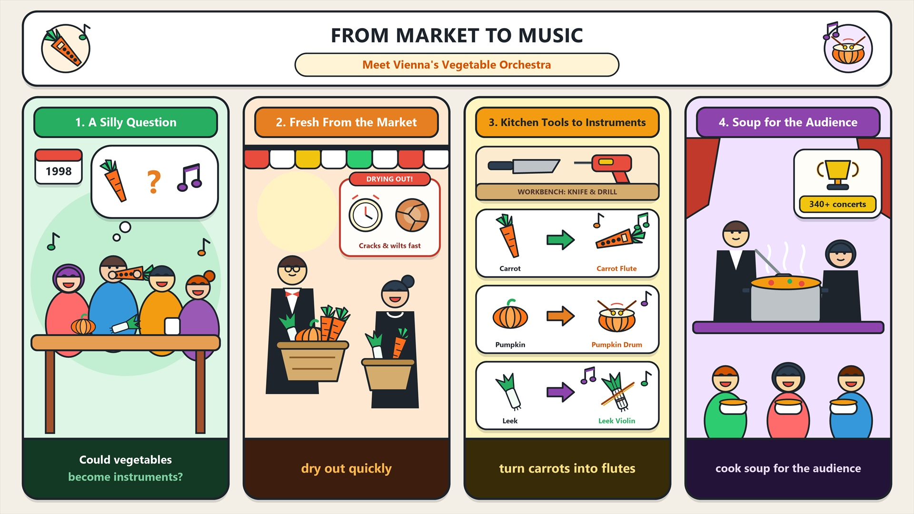

想像你走進音樂廳，舞台上全是蔬菜；你以為是烹飪節目，其實是維也納蔬果管弦樂團的音樂會。
a stage full of vegetables你聽過胡蘿蔔演奏嗎？仔細聽，胡蘿蔔長笛的聲音出奇明亮；樂器都是今天早上才買的新鮮蔬菜。
Have you ever heard a carrot play?切開的蔬菜很快乾掉，今晚的樂器不會再演奏第二次；電子節奏和爵士讓你的腳停不下來。
a mix of electronic beats and jazz別太早離席！樂手會把剩菜煮成湯，你也能嚐到音樂；這場演出證明音樂可以來自任何地方。
taste the music(You) + Imagine (V) + walking ... and seeing ... (O)。
imagine + V-ing；be full of（充滿）；a stage full of N（滿是 N 的舞台）。
Imagine（祈使動詞）walking into a concert hall（動名詞受詞 1）and seeing a stage full of vegetables.（動名詞受詞 2＋形容詞片語修飾）語塊 1（想像一下）➔ 語塊 2（你走進一座音樂廳）➔ 語塊 3（看見滿是蔬菜的舞台，形容詞片語提前）
祈使句，從「想像一下」開始，馬上補上「你」，讀者就被拉進場景。
walking into a concert hall、右邊 seeing a stage...，都是 V-ing，沒有主詞 ➔ 並列的動名詞，一起當 imagine 的受詞。full of vegetables 是形容詞片語後位修飾 stage（＝a stage that is full of vegetables）。
a room full of people＝a room that is full of people（擠滿人的房間）。Imagine V-ing 開場，最能讓讀者身歷其境。You (S) + may think (V) + (that) it is a cooking show (O)，you (S) + are (V) + at a concert。
actually（其實）表反轉；a concert by＋表演者（某人的音樂會）。
You may think it is a cooking show,（子句 1（think 後省略 that））but you are actually at a concert（子句 2（反轉））by the Vienna Vegetable Orchestra.（by＋表演者）語塊 1（你可能以為這是烹飪節目）➔ 語塊 2（但其實你正在聽）➔ 語塊 3（維也納蔬果管弦樂團的，提前）➔ 一場音樂會
先翻讀者的猜測，再翻真相，照原文順序就有反轉效果。
think，右邊 it is a cooking show 是完整句 ➔ 名詞子句，that 省略。actually：其實（推翻前面的想法）。you (S) + have heard (V) + a carrot (O) + play music (OC)，Have 提前形成問句。
Have you ever + p.p.?；hear + O + V（聽到某人做某事全程）。
Have you ever heard（現在完成式疑問句）a carrot play music?（受詞＋原形補語）語塊 1（你聽過）➔ 語塊 2（胡蘿蔔演奏音樂嗎？）
這是問讀者經驗的短問句，從頭順翻。
heard a carrot play music：感官動詞 hear／see／watch＋受詞，後面接原形動詞 play（聽到完整的動作），不是 to play。Have you ever + p.p.? 問經驗；回答 Yes, I have.／No, I never have.you (S) + will find (V) + that 子句 (O)；If 子句是條件。
sound + Adj.（聽起來……）；surprisingly 修飾 bright；flute 長笛。
If you listen carefully,（If 條件子句）you will find（主句）that the carrot flute sounds surprisingly bright.（that 名詞子句）語塊 1（只要仔細聽）➔ 語塊 2（你就會發現）➔ 語塊 3（胡蘿蔔長笛的聲音出奇地明亮）
If 子句在句首，先翻條件「只要仔細聽」。
you listen carefully 是條件。條件子句裡用現在式代替未來，不寫 if you will listen。find，往右看 the carrot flute sounds surprisingly bright 是完整句 ➔ 名詞子句當受詞。sound + Adj.：That sounds great.（聽起來很棒）The musicians (S) + bought (V) + these vegetables (O)，every instrument (S) + is (V) + fresh (C)。
(that) you see 是省略的受格關代子句，修飾 instrument。
every + 單數名詞 + 單數動詞（every instrument is）；fresh（新鮮的）。
The musicians bought these vegetables（子句 1 主幹）at the market this morning,（地點＋時間）so every instrument you see is fresh.（so 結果子句＋省略關代）樂手們 ➔ 語塊 2（今天早上在市場，提前）➔ 語塊 1（買了這些蔬菜）➔ 語塊 3（所以你看到的每一件樂器都是新鮮的）
前半句先處理時間和地點，再翻動作。
every instrument，往右看 you see 缺受詞 ➔ 受格關代，英文嫌囉嗦直接省略：every instrument (that) you see。
every instrument (that) you see：受格關代可省略，主格不行。the instruments (S) + will never be played (V，被動)；Since 子句說原因。
(that) you hear tonight 是省略的受格關代子句。
dry out；never ... again（再也不……）；will be p.p.（未來被動）。
Since cut vegetables dry out quickly,（since 原因子句）the instruments you hear tonight（主詞＋省略關代子句）will never be played again.（未來被動＋never again）語塊 1（由於切開的蔬菜很快就會乾掉）➔ 語塊 2（你今晚聽到的，提前）➔ 樂器 ➔ 語塊 3（再也不會拿來演奏了）
Since 子句講原因，先翻「由於」。
cut vegetables dry out quickly 是一般事實 ➔「由於」。the instruments 是名詞，後面的 you hear tonight 缺受詞 ➔ 省略的受格關代，整段 the instruments you hear tonight 才是主句主詞。will never be played，別把 hear 當成主要動詞。
never ... again：再也不……：I will never do it again.The music (S) + is (V) + a mix (C)，you (S) + cannot stop (V) + moving your feet (O)。
stop + V-ing（停止正在做的事）。
stop V-ing（停止做）vs. stop to V（停下來去做）。
The music is a mix of electronic beats and jazz,（子句 1）and amazingly,（對等連接詞＋句子副詞）you cannot stop moving your feet.（子句 2（stop + V-ing））語塊 1（音樂融合了電子節奏和爵士樂）➔ 語塊 2（神奇的是）➔ 語塊 3（你的腳就是停不下來）
前半句先講音樂的特色，後半句講你的反應，照順序翻。
The music is a mix...、右邊 you cannot stop moving your feet，都有主詞＋動詞 ➔ 對等子句。amazingly 用逗號夾住，表達說話者的驚訝。stop moving（停止動）≠ stop to move（停下來去動），這句是前者。
stop V-ing 停止做／stop to V 停下來去做。cannot stop V-ing，比 I like it very much 更有畫面。(You) + do not leave (V) + your seat (O)；When 子句說時間。
leave one's seat（離開座位）；too soon（太早）。
When the show ends,（When 時間子句）do not leave your seat（否定祈使句）too soon.（副詞片語）語塊 1（演出結束時）➔ 語塊 2＋3（別太早離開座位，副詞提前）
When 子句先翻「演出結束時」，主句是提醒，直接說「別……」。
the show ends 是完整子句，交代「什麼時候」。雖然演出是待會兒才結束，時間子句仍用現在式 ends，不寫 will end。do not leave your seat 省略了主詞 you，是在直接提醒讀者，第二人稱文章最愛用。
The musicians (S) + will cook (V) + the leftover vegetables (O) + into soup，you (S) + can taste (V) + the music (O)。
as part of the audience 是插入語，用逗號夾住，說明 you 的身分。
as + 身分（身為……）；taste the music 是比喻。
The musicians will cook the leftover vegetables into soup,（子句 1（cook A into B））and you,（對等連接詞＋子句 2 主詞）as part of the audience,（as 插入語（身分））can taste the music!（子句 2 動詞）語塊 1（樂手們會把剩下的蔬菜煮成湯）➔ 而 ➔ 語塊 3（身為觀眾的，提前）➔ 你 ➔ 語塊 4（也能嚐到音樂）
前半句順翻：「樂手們會把剩下的蔬菜煮成湯」。
as part of the audience 用兩個逗號夾住，是插入語：as 右邊只有名詞 ➔ 介系詞「身為」，不是連接詞「因為」。拿掉它句子照樣成立：you can taste the music。
as + 身分：As a student, I ...（身為學生，我……）you, as ..., can ... 把讀者直接寫進故事裡，代入感最強。you (S) + may agree (V) + that 子句 (O)；that 子句裡 this orchestra (S) + proves (V) + one thing (O)，冒號後說明。
After tonight,（時間片語）you may agree that this orchestra proves one thing:（主句＋that 名詞子句）music can come from anywhere（冒號後的內容）—even your own kitchen.（破折號＋even 補充）語塊 1（過了今晚）➔ 語塊 2（你也許會同意，這個樂團證明了一件事）➔ 語塊 3（音樂可以來自任何地方）➔ 語塊 4（甚至是你自己家的廚房）
After tonight 先翻「過了今晚」，再對讀者說「你也許會同意」。
agree；往右看 this orchestra proves one thing 是完整句 ➔ 名詞子句當受詞。music can come from anywhere 揭曉是哪件事。agree that 子句／agree with sb／agree to sth。you may agree that ... 把結論交給讀者，收得溫和有力。1. 請選出最適合填入 (1) 的字：
imagine + V-ing：Imagine walking...。2. 請選出最適合填入 (2) 的字：
Have you ever + p.p.? 問經驗，heard 是過去分詞。3. 請選出最適合填入 (3) 的字：
sounds，後接形容詞 bright。4. 請選出最適合填入 (4) 的字：
will never be played。5. 請選出最適合填入 (5) 的字：
as part of the audience（身為觀眾）。6. When the singer walked on stage, the whole ________ stood up and cheered.
audience（觀眾）。7. If you want to ________ that you are right, you need more facts.
prove that 子句。8. ________, the old phone still works after falling into the river.
Amazingly。9. Put the ________ in the fridge, and we can eat them tomorrow.
leftovers（剩菜）。10. 下列哪一句文法正確？
Have you ever + p.p.；有 last year 不可用現在完成式；saw 是過去式。11. 「只要你仔細聽，你就會聽到不同的聲音。」最佳英譯是：
12. 下列哪一句文法正確？
stop + V-ing＝停止正在做的事；stop to V 是「停下來去做」。13. What does the writer want readers to do in this article?
14. Why are all the instruments fresh?
15. Why does the writer say “do not leave your seat too soon”?